judge n
1 Daniele Meulder 20
2 Francis Schott 20
3 Jamal Rayyis 20
4 Jean-M Cardebat 20
5 John Foy 20
6 Linda Murphy 20
7 Olivier Gergaud 20
8 Robert Hodgson 20
9 Tyler Colman 20Statistical Rethinking: Week 5
After a quick tour around interactions, this week was a quick introduction to MCMC samplers and how they are the engine that powers current Bayesian modelling. We looked at Metropolis, Gibbs and finally HMC. Not only HMC is more efficient, but it also let us know when it fails. Let’s tackle the homework with these new tools:
Homework 5
Problem Week 1
We have 9 judges and each of them gave 20 reviews. Let’s check the scores
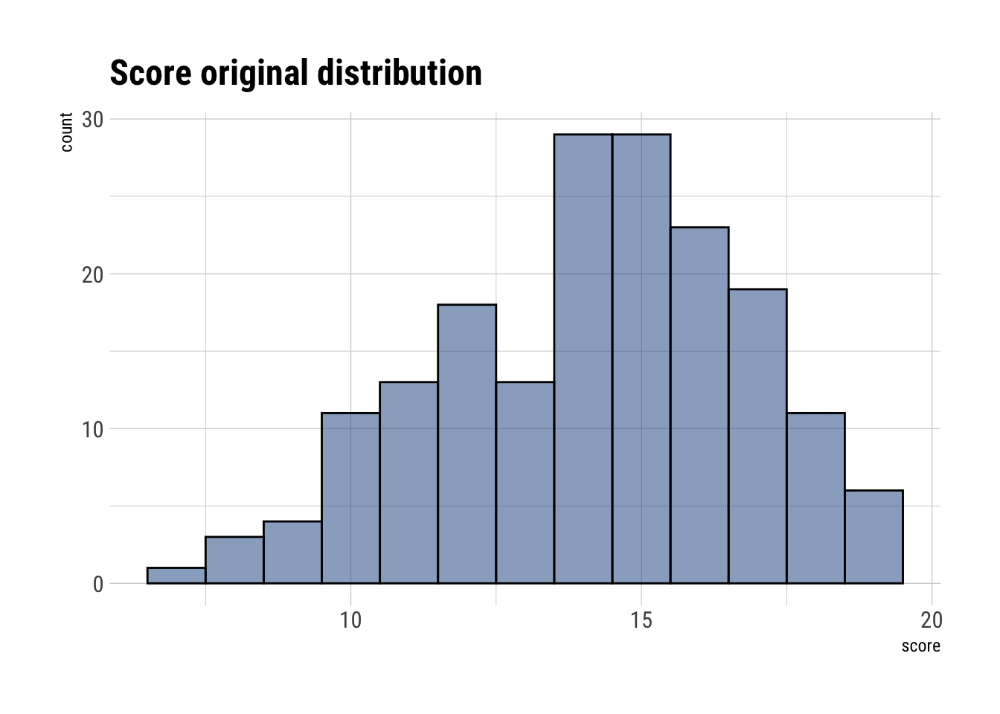
0 should be a meaningful metric. As well as 1. Let’s perform feature scaling on score:
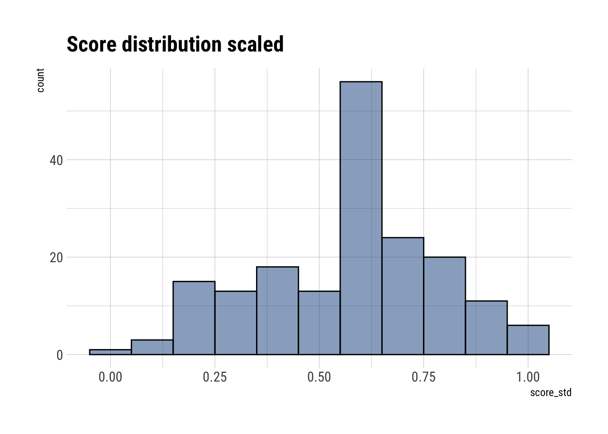
Let’s analyze our predictor variables: judge and wine
judge.amer n
1 0 80
2 1 100 wine n
1 A1 9
2 A2 9
3 B1 9
4 B2 9
5 C1 9
6 C2 9
7 D1 9
8 D2 9
9 E1 9
10 E2 9
11 F1 9
12 F2 9
13 G1 9
14 G2 9
15 H1 9
16 H2 9
17 I1 9
18 I2 9
19 J1 9
20 J2 9Let’s create an index variable:
judge judge.amer n
1 1 0 80
2 2 1 100 wine_fct wine n
1 1 A1 9
2 2 A2 9
3 3 B1 9
4 4 B2 9
5 5 C1 9
6 6 C2 9
7 7 D1 9
8 8 D2 9
9 9 E1 9
10 10 E2 9
11 11 F1 9
12 12 F2 9
13 13 G1 9
14 14 G2 9
15 15 H1 9
16 16 H2 9
17 17 I1 9
18 18 I2 9
19 19 J1 9
20 20 J2 9Consider only variation among judges and wines
Running MCMC with 4 parallel chains, with 1 thread(s) per chain...
Chain 1 Iteration: 1 / 1000 [ 0%] (Warmup)
Chain 1 Iteration: 100 / 1000 [ 10%] (Warmup)
Chain 1 Iteration: 200 / 1000 [ 20%] (Warmup)
Chain 1 Iteration: 300 / 1000 [ 30%] (Warmup)
Chain 1 Iteration: 400 / 1000 [ 40%] (Warmup)
Chain 1 Iteration: 500 / 1000 [ 50%] (Warmup)
Chain 1 Iteration: 501 / 1000 [ 50%] (Sampling)
Chain 1 Iteration: 600 / 1000 [ 60%] (Sampling)
Chain 1 Iteration: 700 / 1000 [ 70%] (Sampling)
Chain 1 Iteration: 800 / 1000 [ 80%] (Sampling)
Chain 2 Iteration: 1 / 1000 [ 0%] (Warmup)
Chain 2 Iteration: 100 / 1000 [ 10%] (Warmup)
Chain 2 Iteration: 200 / 1000 [ 20%] (Warmup)
Chain 2 Iteration: 300 / 1000 [ 30%] (Warmup)
Chain 2 Iteration: 400 / 1000 [ 40%] (Warmup)
Chain 2 Iteration: 500 / 1000 [ 50%] (Warmup)
Chain 2 Iteration: 501 / 1000 [ 50%] (Sampling)
Chain 2 Iteration: 600 / 1000 [ 60%] (Sampling)
Chain 2 Iteration: 700 / 1000 [ 70%] (Sampling)
Chain 2 Iteration: 800 / 1000 [ 80%] (Sampling)
Chain 2 Iteration: 900 / 1000 [ 90%] (Sampling)
Chain 2 Iteration: 1000 / 1000 [100%] (Sampling)
Chain 3 Iteration: 1 / 1000 [ 0%] (Warmup)
Chain 3 Iteration: 100 / 1000 [ 10%] (Warmup)
Chain 3 Iteration: 200 / 1000 [ 20%] (Warmup)
Chain 3 Iteration: 300 / 1000 [ 30%] (Warmup)
Chain 3 Iteration: 400 / 1000 [ 40%] (Warmup)
Chain 3 Iteration: 500 / 1000 [ 50%] (Warmup)
Chain 3 Iteration: 501 / 1000 [ 50%] (Sampling)
Chain 3 Iteration: 600 / 1000 [ 60%] (Sampling)
Chain 3 Iteration: 700 / 1000 [ 70%] (Sampling)
Chain 3 Iteration: 800 / 1000 [ 80%] (Sampling)
Chain 3 Iteration: 900 / 1000 [ 90%] (Sampling)
Chain 3 Iteration: 1000 / 1000 [100%] (Sampling)
Chain 4 Iteration: 1 / 1000 [ 0%] (Warmup)
Chain 4 Iteration: 100 / 1000 [ 10%] (Warmup)
Chain 4 Iteration: 200 / 1000 [ 20%] (Warmup)
Chain 4 Iteration: 300 / 1000 [ 30%] (Warmup)
Chain 4 Iteration: 400 / 1000 [ 40%] (Warmup)
Chain 4 Iteration: 500 / 1000 [ 50%] (Warmup)
Chain 4 Iteration: 501 / 1000 [ 50%] (Sampling)
Chain 4 Iteration: 600 / 1000 [ 60%] (Sampling)
Chain 4 Iteration: 700 / 1000 [ 70%] (Sampling)
Chain 4 Iteration: 800 / 1000 [ 80%] (Sampling)
Chain 4 Iteration: 900 / 1000 [ 90%] (Sampling)
Chain 4 Iteration: 1000 / 1000 [100%] (Sampling)
Chain 1 Iteration: 900 / 1000 [ 90%] (Sampling)
Chain 1 Iteration: 1000 / 1000 [100%] (Sampling)
Chain 1 finished in 0.2 seconds.
Chain 2 finished in 0.2 seconds.
Chain 3 finished in 0.2 seconds.
Chain 4 finished in 0.2 seconds.
All 4 chains finished successfully.
Mean chain execution time: 0.2 seconds.
Total execution time: 0.4 seconds.Let’s check how the sampling of the posterior went:
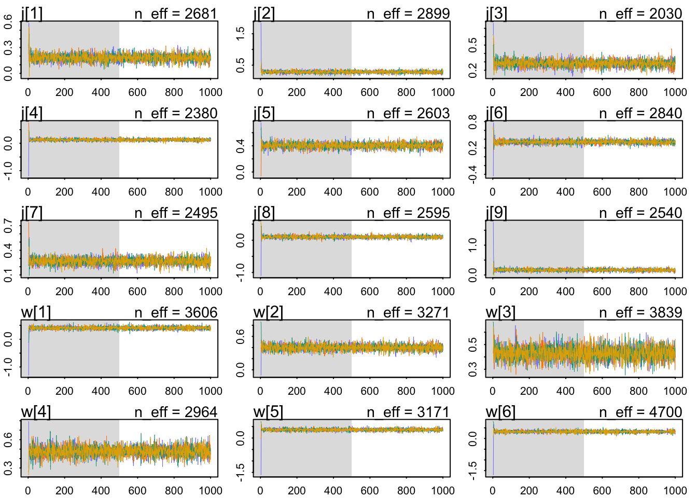
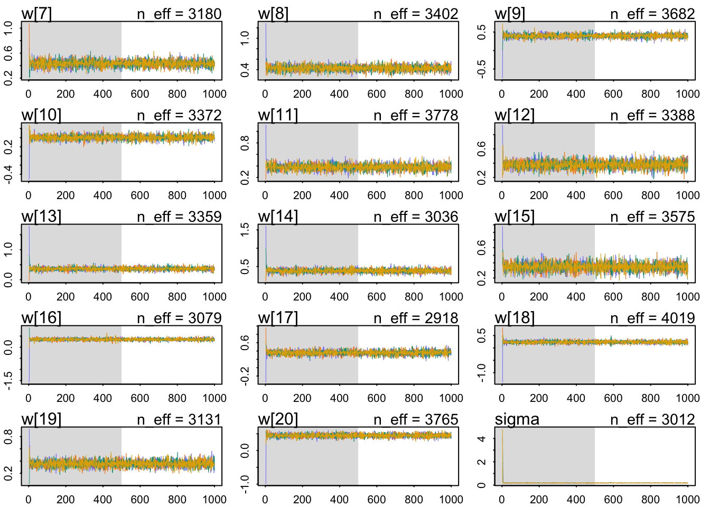
Our chains have all the characteristics of healthy chains:
- They are stationary.
- They mix well the the entire parameter space.
- They converge to explore the same parameter space across chains.
mean sd 5.5% 94.5% n_eff Rhat4
j[1] 0.1812679 0.04184097 0.11536425 0.2466991 2681.346 0.9985223
j[2] 0.2837266 0.04060739 0.21792262 0.3494357 2899.418 1.0001070
j[3] 0.2813452 0.04079548 0.21543446 0.3445295 2030.262 0.9990988
j[4] 0.1266579 0.04195269 0.05924000 0.1945397 2379.647 0.9985487
j[5] 0.4039546 0.04183995 0.33724045 0.4717385 2603.052 0.9984313
j[6] 0.3365812 0.04205265 0.26763338 0.4031346 2840.250 0.9989044
j[7] 0.2655935 0.04304167 0.19877817 0.3340447 2494.531 1.0002036
j[8] 0.1027778 0.04143975 0.03733354 0.1692216 2595.286 0.9994269
j[9] 0.1675230 0.04240294 0.09861235 0.2367892 2540.246 0.9985044
w[1] 0.4068375 0.05576358 0.31675751 0.4962600 3606.090 0.9992622
w[2] 0.4001387 0.05307854 0.31754251 0.4874240 3270.758 1.0001830
w[3] 0.4294509 0.05501064 0.34096957 0.5193709 3839.314 0.9993493
w[4] 0.4767516 0.05393619 0.39104134 0.5604556 2963.826 0.9988180
w[5] 0.3625362 0.05507341 0.27333534 0.4511795 3170.747 0.9998158
w[6] 0.3192989 0.05798840 0.22911316 0.4113976 4700.174 0.9987453
w[7] 0.4324590 0.05396901 0.34503395 0.5191273 3180.325 1.0000889
w[8] 0.4299744 0.05557086 0.34025961 0.5180390 3402.303 0.9987850
w[9] 0.3966763 0.05431820 0.30998893 0.4810641 3682.290 0.9984534
w[10] 0.4038158 0.05637373 0.31703852 0.4963275 3372.165 0.9988019
w[11] 0.3807681 0.05667858 0.28855148 0.4698498 3777.542 0.9987768
w[12] 0.3785841 0.05678800 0.28678797 0.4700092 3388.091 0.9987300
w[13] 0.3657092 0.05677917 0.27569986 0.4570325 3358.784 0.9991056
w[14] 0.3837913 0.05656656 0.29291662 0.4726256 3036.489 0.9984837
w[15] 0.3461885 0.05485679 0.25859807 0.4339357 3575.390 0.9984682
w[16] 0.3496063 0.05351562 0.26491040 0.4349948 3079.376 0.9987447
w[17] 0.3571750 0.05774181 0.26448740 0.4515752 2918.020 0.9993020
w[18] 0.2374186 0.05732765 0.14861334 0.3269997 4018.920 0.9991466
w[19] 0.3554900 0.05523885 0.26811755 0.4450294 3130.919 0.9983058
w[20] 0.4487768 0.05523754 0.35953171 0.5372723 3765.401 0.9982562
sigma 0.1878011 0.01141724 0.17077951 0.2075262 3011.966 0.9994656The Rhat is ok for all the parameters.
The table is just not informative. Let’s do some ggridges for both judges and wines.
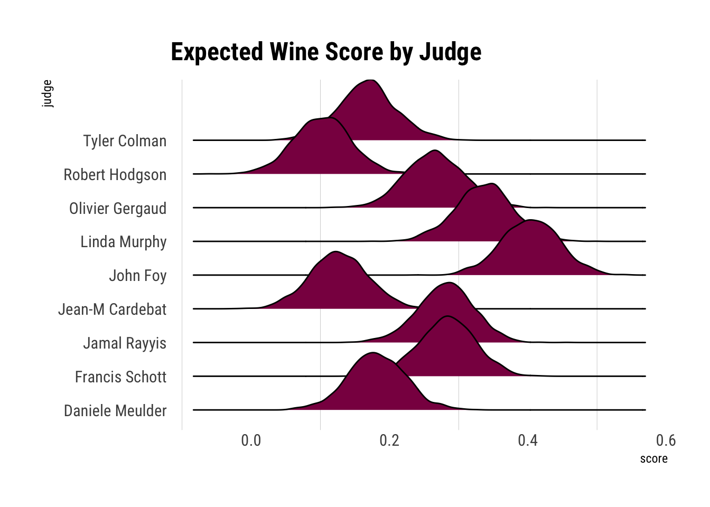
It seems that John Foy was, on average, according to our data and assumptions, gave the highest scores across wines. Whilst Robert Hodgson was the one who gave the least favorable scores.
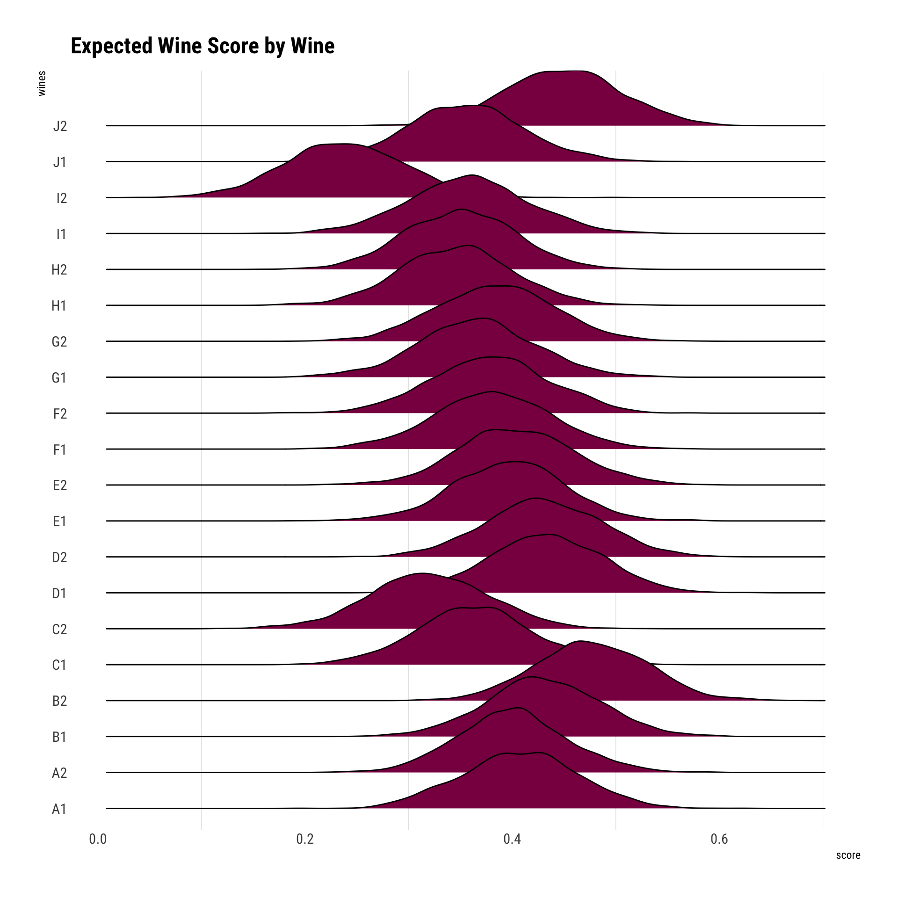
It seems that we expect, on average, wines B2 and J2 to be scored the highest across all judges. Whilst the lowest we expect it to be I2.
Now, consider three features of the wines and judges:
- flight
- wine.amer
- judge.amer
flight flight_int n
1 red 1 90
2 white 2 90There are equal number of wines
wine.amer wine.amer_int n
1 0 1 72
2 1 2 108There are more american wines.
judge.amer judge.amer_int n
1 0 1 80
2 1 2 100There are more american judges’ scores.
Running MCMC with 4 parallel chains, with 1 thread(s) per chain...
Chain 1 Iteration: 1 / 2000 [ 0%] (Warmup)
Chain 1 Iteration: 100 / 2000 [ 5%] (Warmup)
Chain 1 Iteration: 200 / 2000 [ 10%] (Warmup)
Chain 1 Iteration: 300 / 2000 [ 15%] (Warmup)
Chain 1 Iteration: 400 / 2000 [ 20%] (Warmup)
Chain 2 Iteration: 1 / 2000 [ 0%] (Warmup)
Chain 2 Iteration: 100 / 2000 [ 5%] (Warmup)
Chain 2 Iteration: 200 / 2000 [ 10%] (Warmup)
Chain 2 Iteration: 300 / 2000 [ 15%] (Warmup)
Chain 2 Iteration: 400 / 2000 [ 20%] (Warmup)
Chain 3 Iteration: 1 / 2000 [ 0%] (Warmup)
Chain 3 Iteration: 100 / 2000 [ 5%] (Warmup)
Chain 3 Iteration: 200 / 2000 [ 10%] (Warmup)
Chain 3 Iteration: 300 / 2000 [ 15%] (Warmup)
Chain 3 Iteration: 400 / 2000 [ 20%] (Warmup)
Chain 4 Iteration: 1 / 2000 [ 0%] (Warmup)
Chain 4 Iteration: 100 / 2000 [ 5%] (Warmup)
Chain 4 Iteration: 200 / 2000 [ 10%] (Warmup)
Chain 4 Iteration: 300 / 2000 [ 15%] (Warmup)
Chain 4 Iteration: 400 / 2000 [ 20%] (Warmup)
Chain 1 Iteration: 500 / 2000 [ 25%] (Warmup)
Chain 1 Iteration: 600 / 2000 [ 30%] (Warmup)
Chain 1 Iteration: 700 / 2000 [ 35%] (Warmup)
Chain 1 Iteration: 800 / 2000 [ 40%] (Warmup)
Chain 1 Iteration: 900 / 2000 [ 45%] (Warmup)
Chain 1 Iteration: 1000 / 2000 [ 50%] (Warmup)
Chain 1 Iteration: 1001 / 2000 [ 50%] (Sampling)
Chain 2 Iteration: 500 / 2000 [ 25%] (Warmup)
Chain 2 Iteration: 600 / 2000 [ 30%] (Warmup)
Chain 2 Iteration: 700 / 2000 [ 35%] (Warmup)
Chain 2 Iteration: 800 / 2000 [ 40%] (Warmup)
Chain 2 Iteration: 900 / 2000 [ 45%] (Warmup)
Chain 3 Iteration: 500 / 2000 [ 25%] (Warmup)
Chain 3 Iteration: 600 / 2000 [ 30%] (Warmup)
Chain 3 Iteration: 700 / 2000 [ 35%] (Warmup)
Chain 3 Iteration: 800 / 2000 [ 40%] (Warmup)
Chain 4 Iteration: 500 / 2000 [ 25%] (Warmup)
Chain 4 Iteration: 600 / 2000 [ 30%] (Warmup)
Chain 4 Iteration: 700 / 2000 [ 35%] (Warmup)
Chain 1 Iteration: 1100 / 2000 [ 55%] (Sampling)
Chain 1 Iteration: 1200 / 2000 [ 60%] (Sampling)
Chain 1 Iteration: 1300 / 2000 [ 65%] (Sampling)
Chain 2 Iteration: 1000 / 2000 [ 50%] (Warmup)
Chain 2 Iteration: 1001 / 2000 [ 50%] (Sampling)
Chain 2 Iteration: 1100 / 2000 [ 55%] (Sampling)
Chain 2 Iteration: 1200 / 2000 [ 60%] (Sampling)
Chain 3 Iteration: 900 / 2000 [ 45%] (Warmup)
Chain 3 Iteration: 1000 / 2000 [ 50%] (Warmup)
Chain 3 Iteration: 1001 / 2000 [ 50%] (Sampling)
Chain 3 Iteration: 1100 / 2000 [ 55%] (Sampling)
Chain 4 Iteration: 800 / 2000 [ 40%] (Warmup)
Chain 4 Iteration: 900 / 2000 [ 45%] (Warmup)
Chain 4 Iteration: 1000 / 2000 [ 50%] (Warmup)
Chain 4 Iteration: 1001 / 2000 [ 50%] (Sampling)
Chain 4 Iteration: 1100 / 2000 [ 55%] (Sampling)
Chain 1 Iteration: 1400 / 2000 [ 70%] (Sampling)
Chain 1 Iteration: 1500 / 2000 [ 75%] (Sampling)
Chain 1 Iteration: 1600 / 2000 [ 80%] (Sampling)
Chain 1 Iteration: 1700 / 2000 [ 85%] (Sampling)
Chain 2 Iteration: 1300 / 2000 [ 65%] (Sampling)
Chain 2 Iteration: 1400 / 2000 [ 70%] (Sampling)
Chain 2 Iteration: 1500 / 2000 [ 75%] (Sampling)
Chain 2 Iteration: 1600 / 2000 [ 80%] (Sampling)
Chain 3 Iteration: 1200 / 2000 [ 60%] (Sampling)
Chain 3 Iteration: 1300 / 2000 [ 65%] (Sampling)
Chain 3 Iteration: 1400 / 2000 [ 70%] (Sampling)
Chain 4 Iteration: 1200 / 2000 [ 60%] (Sampling)
Chain 4 Iteration: 1300 / 2000 [ 65%] (Sampling)
Chain 4 Iteration: 1400 / 2000 [ 70%] (Sampling)
Chain 1 Iteration: 1800 / 2000 [ 90%] (Sampling)
Chain 1 Iteration: 1900 / 2000 [ 95%] (Sampling)
Chain 1 Iteration: 2000 / 2000 [100%] (Sampling)
Chain 2 Iteration: 1700 / 2000 [ 85%] (Sampling)
Chain 2 Iteration: 1800 / 2000 [ 90%] (Sampling)
Chain 2 Iteration: 1900 / 2000 [ 95%] (Sampling)
Chain 2 Iteration: 2000 / 2000 [100%] (Sampling)
Chain 3 Iteration: 1500 / 2000 [ 75%] (Sampling)
Chain 3 Iteration: 1600 / 2000 [ 80%] (Sampling)
Chain 3 Iteration: 1700 / 2000 [ 85%] (Sampling)
Chain 3 Iteration: 1800 / 2000 [ 90%] (Sampling)
Chain 4 Iteration: 1500 / 2000 [ 75%] (Sampling)
Chain 4 Iteration: 1600 / 2000 [ 80%] (Sampling)
Chain 4 Iteration: 1700 / 2000 [ 85%] (Sampling)
Chain 1 finished in 0.6 seconds.
Chain 2 finished in 0.6 seconds.
Chain 3 Iteration: 1900 / 2000 [ 95%] (Sampling)
Chain 3 Iteration: 2000 / 2000 [100%] (Sampling)
Chain 4 Iteration: 1800 / 2000 [ 90%] (Sampling)
Chain 4 Iteration: 1900 / 2000 [ 95%] (Sampling)
Chain 4 Iteration: 2000 / 2000 [100%] (Sampling)
Chain 3 finished in 0.6 seconds.
Chain 4 finished in 0.7 seconds.
All 4 chains finished successfully.
Mean chain execution time: 0.6 seconds.
Total execution time: 0.8 seconds.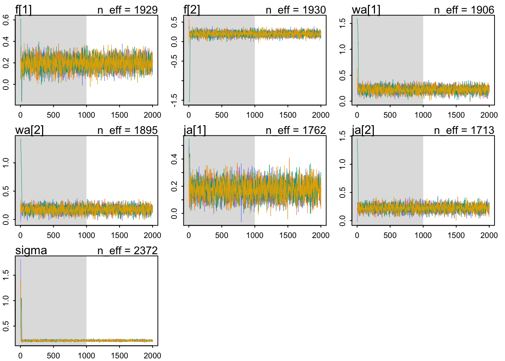
These chains look healthy. They:
- Are stationary.
- Mix well.
- All chains converge.
mean sd 5.5% 94.5% n_eff Rhat4
f[1] 0.1964321 0.05921141 0.10264248 0.2932756 1929.489 1.0017991
f[2] 0.1972408 0.05864249 0.10323917 0.2898972 1930.435 1.0015680
wa[1] 0.2209778 0.06044152 0.12594084 0.3167652 1905.601 0.9995583
wa[2] 0.1760510 0.06016986 0.08176468 0.2715712 1894.694 0.9998729
ja[1] 0.1751097 0.06005995 0.07914266 0.2699528 1761.885 1.0008554
ja[2] 0.2211422 0.06001029 0.12355457 0.3164412 1712.893 1.0004454
sigma 0.2146800 0.01172746 0.19687684 0.2346205 2371.869 0.9998254Let’s visualize the differences between flights:
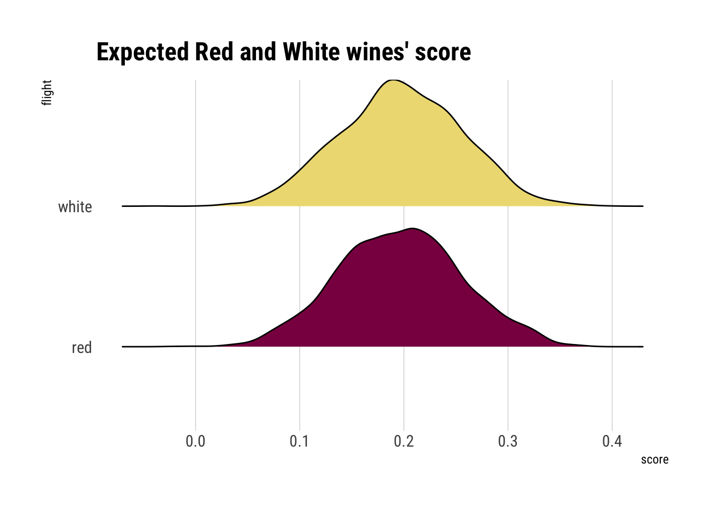
On expectation, there does not seem to be a difference between the red’s score and the white’s score.
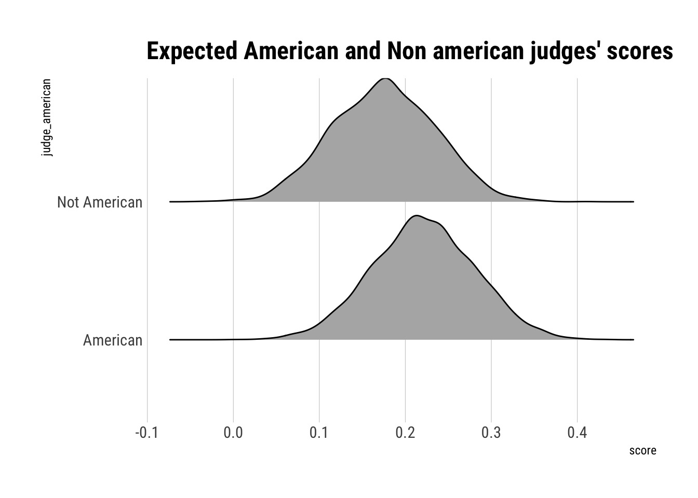
American judges, on average, tend to give higher scores.
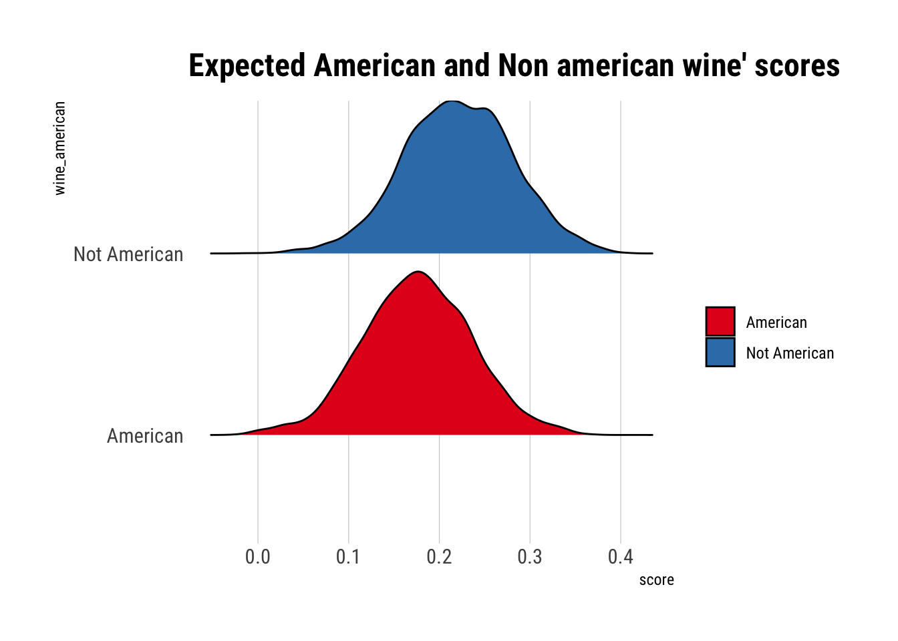
Non-American wines tend to get higher scores on average.
Now consider two way intercations among the three features
Running MCMC with 4 parallel chains, with 1 thread(s) per chain...
Chain 1 Iteration: 1 / 2000 [ 0%] (Warmup)
Chain 1 Iteration: 100 / 2000 [ 5%] (Warmup)
Chain 2 Iteration: 1 / 2000 [ 0%] (Warmup)
Chain 2 Iteration: 100 / 2000 [ 5%] (Warmup)
Chain 3 Iteration: 1 / 2000 [ 0%] (Warmup)
Chain 3 Iteration: 100 / 2000 [ 5%] (Warmup)
Chain 4 Iteration: 1 / 2000 [ 0%] (Warmup)
Chain 4 Iteration: 100 / 2000 [ 5%] (Warmup)
Chain 1 Iteration: 200 / 2000 [ 10%] (Warmup)
Chain 2 Iteration: 200 / 2000 [ 10%] (Warmup)
Chain 3 Iteration: 200 / 2000 [ 10%] (Warmup)
Chain 4 Iteration: 200 / 2000 [ 10%] (Warmup)
Chain 1 Iteration: 300 / 2000 [ 15%] (Warmup)
Chain 2 Iteration: 300 / 2000 [ 15%] (Warmup)
Chain 3 Iteration: 300 / 2000 [ 15%] (Warmup)
Chain 4 Iteration: 300 / 2000 [ 15%] (Warmup)
Chain 1 Iteration: 400 / 2000 [ 20%] (Warmup)
Chain 2 Iteration: 400 / 2000 [ 20%] (Warmup)
Chain 3 Iteration: 400 / 2000 [ 20%] (Warmup)
Chain 1 Iteration: 500 / 2000 [ 25%] (Warmup)
Chain 2 Iteration: 500 / 2000 [ 25%] (Warmup)
Chain 3 Iteration: 500 / 2000 [ 25%] (Warmup)
Chain 4 Iteration: 400 / 2000 [ 20%] (Warmup)
Chain 1 Iteration: 600 / 2000 [ 30%] (Warmup)
Chain 2 Iteration: 600 / 2000 [ 30%] (Warmup)
Chain 3 Iteration: 600 / 2000 [ 30%] (Warmup)
Chain 4 Iteration: 500 / 2000 [ 25%] (Warmup)
Chain 4 Iteration: 600 / 2000 [ 30%] (Warmup)
Chain 1 Iteration: 700 / 2000 [ 35%] (Warmup)
Chain 1 Iteration: 800 / 2000 [ 40%] (Warmup)
Chain 2 Iteration: 700 / 2000 [ 35%] (Warmup)
Chain 3 Iteration: 700 / 2000 [ 35%] (Warmup)
Chain 4 Iteration: 700 / 2000 [ 35%] (Warmup)
Chain 1 Iteration: 900 / 2000 [ 45%] (Warmup)
Chain 2 Iteration: 800 / 2000 [ 40%] (Warmup)
Chain 3 Iteration: 800 / 2000 [ 40%] (Warmup)
Chain 4 Iteration: 800 / 2000 [ 40%] (Warmup)
Chain 1 Iteration: 1000 / 2000 [ 50%] (Warmup)
Chain 1 Iteration: 1001 / 2000 [ 50%] (Sampling)
Chain 2 Iteration: 900 / 2000 [ 45%] (Warmup)
Chain 3 Iteration: 900 / 2000 [ 45%] (Warmup)
Chain 4 Iteration: 900 / 2000 [ 45%] (Warmup)
Chain 1 Iteration: 1100 / 2000 [ 55%] (Sampling)
Chain 2 Iteration: 1000 / 2000 [ 50%] (Warmup)
Chain 2 Iteration: 1001 / 2000 [ 50%] (Sampling)
Chain 3 Iteration: 1000 / 2000 [ 50%] (Warmup)
Chain 3 Iteration: 1001 / 2000 [ 50%] (Sampling)
Chain 4 Iteration: 1000 / 2000 [ 50%] (Warmup)
Chain 4 Iteration: 1001 / 2000 [ 50%] (Sampling)
Chain 1 Iteration: 1200 / 2000 [ 60%] (Sampling)
Chain 1 Iteration: 1300 / 2000 [ 65%] (Sampling)
Chain 2 Iteration: 1100 / 2000 [ 55%] (Sampling)
Chain 3 Iteration: 1100 / 2000 [ 55%] (Sampling)
Chain 3 Iteration: 1200 / 2000 [ 60%] (Sampling)
Chain 4 Iteration: 1100 / 2000 [ 55%] (Sampling)
Chain 1 Iteration: 1400 / 2000 [ 70%] (Sampling)
Chain 2 Iteration: 1200 / 2000 [ 60%] (Sampling)
Chain 3 Iteration: 1300 / 2000 [ 65%] (Sampling)
Chain 4 Iteration: 1200 / 2000 [ 60%] (Sampling)
Chain 1 Iteration: 1500 / 2000 [ 75%] (Sampling)
Chain 2 Iteration: 1300 / 2000 [ 65%] (Sampling)
Chain 3 Iteration: 1400 / 2000 [ 70%] (Sampling)
Chain 4 Iteration: 1300 / 2000 [ 65%] (Sampling)
Chain 1 Iteration: 1600 / 2000 [ 80%] (Sampling)
Chain 2 Iteration: 1400 / 2000 [ 70%] (Sampling)
Chain 3 Iteration: 1500 / 2000 [ 75%] (Sampling)
Chain 4 Iteration: 1400 / 2000 [ 70%] (Sampling)
Chain 1 Iteration: 1700 / 2000 [ 85%] (Sampling)
Chain 2 Iteration: 1500 / 2000 [ 75%] (Sampling)
Chain 2 Iteration: 1600 / 2000 [ 80%] (Sampling)
Chain 3 Iteration: 1600 / 2000 [ 80%] (Sampling)
Chain 4 Iteration: 1500 / 2000 [ 75%] (Sampling)
Chain 1 Iteration: 1800 / 2000 [ 90%] (Sampling)
Chain 1 Iteration: 1900 / 2000 [ 95%] (Sampling)
Chain 2 Iteration: 1700 / 2000 [ 85%] (Sampling)
Chain 3 Iteration: 1700 / 2000 [ 85%] (Sampling)
Chain 4 Iteration: 1600 / 2000 [ 80%] (Sampling)
Chain 1 Iteration: 2000 / 2000 [100%] (Sampling)
Chain 2 Iteration: 1800 / 2000 [ 90%] (Sampling)
Chain 3 Iteration: 1800 / 2000 [ 90%] (Sampling)
Chain 4 Iteration: 1700 / 2000 [ 85%] (Sampling)
Chain 1 finished in 1.9 seconds.
Chain 2 Iteration: 1900 / 2000 [ 95%] (Sampling)
Chain 3 Iteration: 1900 / 2000 [ 95%] (Sampling)
Chain 4 Iteration: 1800 / 2000 [ 90%] (Sampling)
Chain 4 Iteration: 1900 / 2000 [ 95%] (Sampling)
Chain 2 Iteration: 2000 / 2000 [100%] (Sampling)
Chain 3 Iteration: 2000 / 2000 [100%] (Sampling)
Chain 4 Iteration: 2000 / 2000 [100%] (Sampling)
Chain 2 finished in 2.0 seconds.
Chain 3 finished in 2.0 seconds.
Chain 4 finished in 2.0 seconds.
All 4 chains finished successfully.
Mean chain execution time: 2.0 seconds.
Total execution time: 2.1 seconds.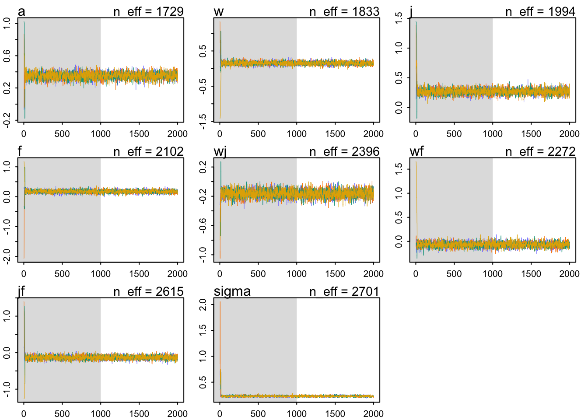
These chains look healthy, i.e., they:
- They are stationary
- They mix well over the parameter space.
- Different chains converge to explore the same ridges of parameter space.
mean sd 5.5% 94.5% n_eff Rhat4
a 0.35108556 0.04081151 0.28627780 0.41637738 1729.482 1.0000419
w 0.15192587 0.04763595 0.07572766 0.23084453 1833.197 1.0002522
j 0.26885958 0.04838545 0.19295458 0.34522238 1993.536 1.0001668
f 0.17341672 0.05018627 0.09319243 0.25358759 2102.432 1.0013111
wj -0.16473790 0.05206359 -0.24481138 -0.08426990 2395.754 1.0006508
wf -0.06783489 0.05247324 -0.15139847 0.01594699 2271.637 1.0019762
jf -0.13253690 0.05238871 -0.21463390 -0.04946512 2615.125 1.0007479
sigma 0.22859152 0.01338763 0.20795889 0.24996585 2700.983 0.9999136The Rhat is ok for all the parameters. However, now that we have interactions, it is not easy nor intuitive to analyze parameters on their own scale. We must compare them on the outcome scale. Let’s create predictions for all eight possible values
# A tibble: 8 × 3
wa ja flight
<dbl> <dbl> <dbl>
1 1 1 1
2 1 1 0
3 1 0 1
4 1 0 0
5 0 1 1
6 0 1 0
7 0 0 1
8 0 0 0Then, we can calculate our expected predictions for each of the cases:
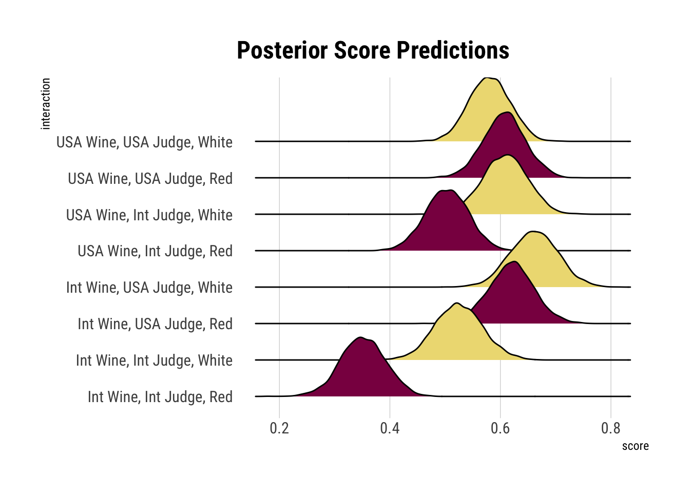
Whites tend, on average, to be higher scored. Also, non American Judges tend to be harsher than their american counterparts, regardless of the origin of the wine. The worst rated wine, on average, are the red international wine.